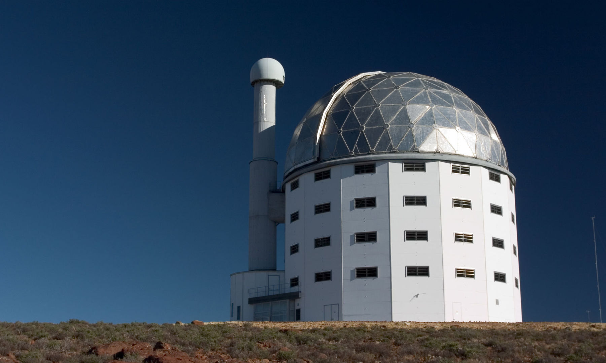

ЮЖНОАФРИКАНСКАЯ АСТРОНОМИЧЕСКАЯ ОБСЕРВАТОРИЯ
20-10-1820
Южноафриканская астрономическая обсерватория (оригинальное английское название: South African Astronomical Observatory ; сокращенно SAAO ) — национальный центр оптической и инфракрасной астрономии в Южной Африке. Основанная в 1972 году, обсерватория находится под управлением Южноафриканского национального исследовательского фонда и занимается исследованиями в области астрономии и астрофизики . Основные телескопы расположены в Сазерленде, в 370 километрах от старой Кейптаунской обсерватории, где они базируются.
Он был основан как преемник исторической Королевской обсерватории на мысе Доброй Надежды , основанной в 1820 году, и обсерватории Союза в Йоханнесбурге.
SAAO поддерживает многочисленные международные соглашения, посвященные научно-техническому сотрудничеству. Основные инструментальные вклады Южноафриканской астрономической обсерватории включают разработку корректора сферической аберрации и Большого южноафриканского телескопа.